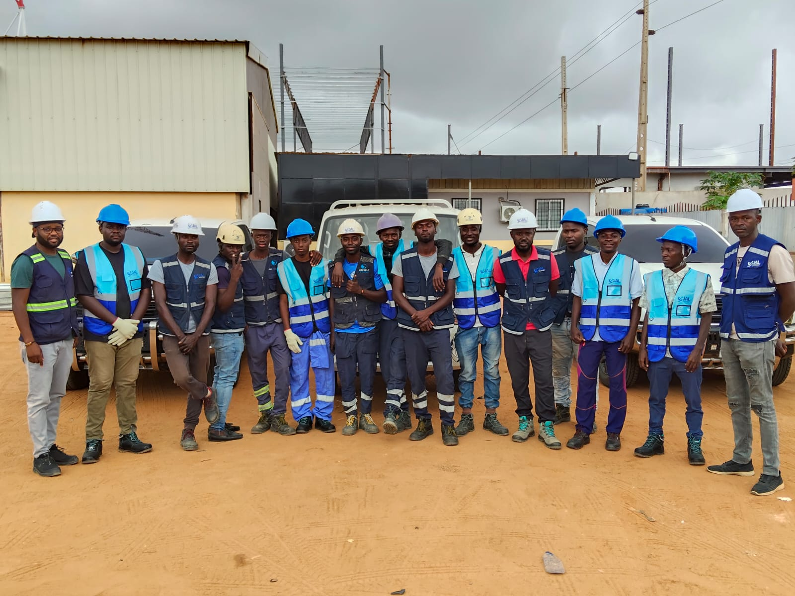

People & collaboration
Clear communication and close coordination help bring technical teams and project requirements together.
Telecommunications expertise with a human perspective. Meet the people and thinking behind JAL TELECOM.
JAL TELECOM works at the intersection of people, technology and infrastructure, supporting telecommunications requirements in Angola.
From our base in Luanda, we bring practical field insight to installation, radio and transmission, connectivity and technical support. Our approach starts with understanding your requirements and coordinating the right scope of work.
“Conectamos o futuro” — connecting the future — expresses the ambition behind our work: helping turn technical plans into the connections people and organisations depend on.
Explore our expertiseClear communication and close coordination help bring technical teams and project requirements together.
Our approach puts attention on the work environment, preparation and the practical details of implementation.
We consider how infrastructure, equipment and support fit together within your project.

Telecommunications is a team effort. Our field photographs reflect the people, preparation and equipment involved in bringing infrastructure into the real world.
We bring a collaborative mindset to conversations with clients, technical teams and project stakeholders.
Talk to our teamLeading JAL TELECOM’s direction and client relationships.
Technical leadership and coordination for the work in the field.
Practical engineering starts with listening, a defined scope and care in the details.
We listen to your requirements and the conditions your project needs to work within.
Together, we define the technical scope, responsibilities and a practical way forward.
Our field team brings the installation and integration requirements into focus.
We keep the conversation open for maintenance and ongoing technical needs.
Tell us what you're planning. Let’s find the right way forward.